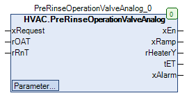

PreRinseOperationValveAnalog (FB)¶
FUNCTION_BLOCK PreRinseOperationValveAnalog
Kurzbeschreibung¶
Steuerung des Anfahrbetriebs einer LüftungsanlageTypische Anwendung: Vorbereitung einer Lüftungsanlage bei tiefen Aussentemperaturen
Darstellung¶

Funktionsbeschreibung¶
Allgemeines¶
Dieser Funktionsbaustein dient zur Steuerung des Anfahrbetriebs einer Lüftungsanlage in Abhängigkeit von der aktuellen Aussentemperatur rOAT
und der aktuellen Rücklauftemperatur rRnT des Erhitzerkreises.
Er garantiert die definierte und wirkungsvolle Vorheizung des Erhitzerkreises vor der Freigabe der Ventilatoren der Lüftungsanlage
( Ziel: Vermeidung von Frostschäden am Erhitzerkreis ).
Steuerung¶
Der Anfahrbetrieb ( Vorheizung und Stellsignalrampe ) startet mit einer ansteigenden Flanke ( FALSE > TRUE ) am Eingang xRequest,
falls die aktuelle Aussentemperatur rOAT den Schwellwert rMaxOAT unterschreitet.
Der Ausgang xEn wird aktiviert ( = TRUE ) und dient zur Anzeige des aktiven Anfahrbetriebs bzw. zur Freigabe der Erhitzerpumpe.
Das Stellsignal rHeaterY wird auf den Sollwert / Parameter rYStart fixiert und dient zur Steuerung des Erhitzerventils.
Wertebereich für den Sollwert / Parameter rYStart
Der Sollwert / Parameter darf nur Werte > 0 % annehmen
Der Anfahrbetrieb endet nach der Mindestzeitdauer tMinTime ( Bedingung: Es ist kein Rücklauftemperaturfühler ( rRnT <= -20.0 °C ) vorhanden ).
Der Anfahrbetrieb endet, falls die aktuelle Rücklauftemperatur rRnT den Schwellwert rMinRnT überschreitet
( Bedingung: Es ist ein Rücklauftemperaturfühler ( rRnT > -20.0 °C ) vorhanden ).
Der Anfahrbetrieb kann zu jedem Zeitpunkt durch den Eingang xRequest ( = FALSE ) beendet werden.
Nach dem Ende des Anfahrbetriebs wird am Stellsignal - Erhitzerventil aus Anfahrbetrieb rHeaterY eine linear abfallende ( Startwert = rYStart )
Signalrampe mit der Zeitdauer tRamp erzeugt. Während der Erzeugung dieser Signalrampe und während des Anfahrbetriebs ist der Auagang xRamp aktiv ( = TRUE ).
Überschreitet die Zeitdauer des Anfahrbetriebs den Schwellwert tMaxTime, so wird die Störmeldung bei Zeitüberschreitung aktiviert ( = TRUE ).
Am Ausgang tET wird während des Anfahrbetriebs die bereits verstrichene Zeitdauer dargestellt.
Im nicht aktiven Zustand ( xRequest = FALSE ) nehmen die Ausgänge folgende Zustände an:
xEn xRamp rHeaterY tET xAlarm Hinweise FALSE FALSE 0.0 % Letzer Wert FALSE xRequest = FALSE
Legende: X = beliebig
Visualisierung¶
Codesys¶
- InOut:
Scope Name Type Initial Comment Input xRequest BOOL Anforderung des Normalbetriebs der Lüftungsanlage ( FALSE = Aus, TRUE = Ein ) rOAT REAL Aktuelle Aussentemperatur in °C rRnT REAL -22.2 Aktuelle Rücklauftemperatur im Erhitzerkreis in °C ( optional ) Output xEn BOOL Freigabe des Anfahrbetriebs ( FALSE = Aus, TRUE = Ein ) xRamp BOOL Anzeige - Stellsignalrampe nach dem Anfahrbetrieb ( FALSE = Aus, TRUE = Ein ) rHeaterY REAL Stellsignal - Erhitzerventil aus Anfahrbetrieb / Stellsignalrampe in % tET TIME Laufzeit - Anfahrbetrieb und Stellsignalrampe in s xAlarm BOOL Störmeldung bei Zeitüberschreitung ( FALSE = Aus, TRUE = Ein ) Input tMaxTime TIME TIME#30m0s0ms Maximale Zeitdauer des Anfahrbetriebs in Minuten rYStart WORD 80 Startwert für die Ventilöffnung im Anfahrbetrieb [1..100 %] tRamp TIME TIME#8m0s0ms Laufzeit der Stellsignalrampe tMinTime TIME TIME#2m0s0ms Mindestzeitdauerdauer des Anfahrbetriebs in Minuten rMinRnT REAL 30 Minimalwert der Rücklauftemperatur für die Beendigung des Anfahrbetriebs in °C rMaxOAT REAL 10 Maximalwert der Aussentemperatur für die Freigabe des Anfahrbetriebs in °C